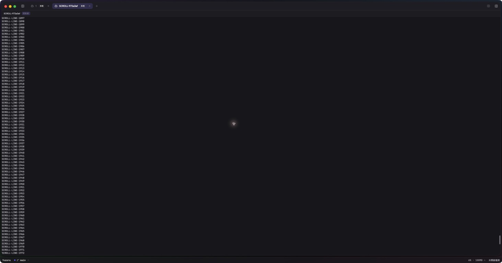

本次處理「Windows 原生已快，但 WSL 延遲仍高；wheel／drag 不應等 overflow RPC」的增量修正。產品提交 8e7c451700e8594116c59bc7c801f6dcc9afc7c7，候選分支 release/v0.0.14，已推送；PR #103 保持候選狀態。尚未宣告全平台驗收完成，未發布新的正式版本。
| 根因 | 修正 | 位置 |
|---|---|---|
| WSL wheel 與 scrollbar drag 原本各自管理位置；wheel 可能先讀 pane.get，再等 pane.scroll，最後才更新 scrollbar。 | 共用同一個 scroll controller。已取得範圍後，wheel／drag 立即更新本地位置，背景最多一筆寫入與一個最新目標。初次未知範圍才等待 hydration，合併期間輸入，不虛構歷史。 | src/terminal/terminalTransport.ts、herdrScrollController.ts、HerdrScrollbar.tsx；src/app/panels/HerdrTerminalPage.tsx |
| 慢速回應可能包含較舊位置。 | revision 保護最新 wheel／drag 位置；舊 acknowledgement 只更新 overflow 範圍，最後回應校正實際 offset。reset／detach／closed 隔離舊 generation，背景錯誤顯示於 UI，未送出的尾端不重播。 | herdrScrollController.ts、terminalTransport.ts |
| Unix socket 在尚未有資料時固定 sleep 最多 100ms，pane RPC 多次往返放大延遲。 | Unix／WSL helper 改用 poll readiness，保留讀寫 deadline、partial-line 與尺寸限制。Windows named pipe 保留原有等待行為，未重新啟用 WSL 不安全的 terminal.scroll。 | src-tauri/host/src/herdr_transport.rs |
本次沿用 shadcn ScrollArea，不新增替代捲軸。高頻更新只落在 scrollbar 元件；terminal viewport 仍由 HERDR 真實 frame 驅動，未偽造輸出、削減歷史或隱藏錯誤。
macOS 26.6.2 (25G83)，arm64，HERDR 0.9.0 protocol 22。前後 helper 使用同一個 source 目錄、相同 standalone Cargo.lock、cargo build --locked --release；baseline 為 ac03ed3，僅替換 herdr_transport.rs 產生修正後 helper。相同 Session scroll-e2e-972a3af、pane w1:p2、80×24 viewport、既有 2000 行 fixture，每條路徑各 50 次交替上下 10 行。
| 路徑 | frame p50 前 → 後 | frame p95 前 → 後 | 完整 RPC p95 前 → 後 |
|---|---|---|---|
| native terminal.scroll | 17.82 → 17.97ms | 18.72 → 18.64ms | 18.73 → 18.66ms |
| pane.get + pane.scroll | 367.24 → 55.65ms | 372.16 → 83.32ms | 476.38 → 83.39ms |
| pane.scroll（已知位置） | 132.20 → 27.56ms | 136.17 → 29.21ms | 239.78 → 29.23ms |
frame 指 connector 收到資料，並非 WebView 完成繪製；不含 RDP／模型／網路延遲。修正後 pane.scroll 仍有單次約 134ms 的 outlier，不能據此宣稱所有事件皆小於 30ms。WSL 實際延遲未測，不將本表外推為 Windows／Ubuntu PASS。
獨立 socket probe（同機 unoptimized test，30 次、peer 延遲 5ms）：p50 104.41 → 6.30ms、p95 109.77 → 6.36ms。修改前回歸 probe 確實 FAIL，修改後 PASS。
原始資料：before.json、after.json、建置與 SHA-256、重複量測腳本。執行格式：bun compare.ts HELPER_BINARY OUTPUT_JSON；僅使用指定的專用 fixture Session，勿套用到使用者工作。
| 範圍 | 狀態 | 方法／證據 |
|---|---|---|
| WSL 非同步 dispatch、wheel＋drag 合併、overflow reconciliation | PASS | herdrAsyncScroll.test.ts：修改前 FAIL；修改後含初始化合併、重連舊回應、背景失敗共 4 案例通過。另 HerdrScrollbar.test.tsx 實際 shadcn proxy 驗證 delayed RPC 期間位置立即更新、overflow 擴張與無重複寫入。 |
| 完整前端 | PASS | 221 files／2696 tests；之後新增 1 個 UI regression，兩個相關檔案 8 tests 通過。lint 0 errors（既有 52 warnings）、typecheck、production frontend build 通過。 |
| Rust | PASS | cargo check --locked --all-targets；主 App 379 單元測試＋1 integration；host 375 單元測試＋12 integrations。原有需特定環境的 ignored tests 不算 PASS；新增 timing probe 另行執行。fmt／Clippy exact baseline 90 diagnostics 通過。 |
| Windows／Linux／macOS compile | PASS | 8e7c451 CI 三平台 Rust compile、frontend 與 Linux database integration 成功。 |
| macOS packaged App 啟動／wheel | PASS | 本機以 8e7c451 產品碼、四平台同提交 Host artifacts 建置 aarch64 App；codesign --verify --deep --strict 通過，安裝到 /Applications/Yuzora.app。原生畫面顯示 SCROLL fixture 歷史行隨 wheel 改變。 |
| macOS 原生 drag／捲動後輸入 | BLOCKED | 第一次 pointer drag 尚未確認中段目標；再次定位 scrollbar 時 Mac 自動鎖定，工具明確回報不能解鎖，已請使用者手動解鎖。未將拖曳或輸入標示 PASS。新版 App 保持開啟。 |
| 候選 App 替換／重新連線的工作延續性 | PASS | 同一 Session、workspace w1、tab w1:t2、pane w1:p2、terminal term_65b5fd782f5b92；shell PID 34228 仍存在，專用背景工作 PID 10943 從 tick 1 連續到 387。證據。這是候選版手動替換與 reconnect，不是 stable updater 驗收。 |
| Windows 原生 packaged App | BLOCKED | Windows App 連到 192.168.213.129，仍停於 root certificate 無法驗證提示；未按 Continue，未繞過驗證。編譯成功不代替原生 E2E。 |
| Windows＋WSL Ubuntu 26.04 | BLOCKED | 同一 RDP 連線阻擋，WSL 的 wheel、drag、scrollbar、input、重連、runtime 效能未實測；需使用包含新 Linux helper 的候選 installer。 |
| HERDR 其他版本／完整 v0.0.10～v0.0.13 覆蓋／升級延續性 | NOT RUN | 本增量只驗 HERDR 0.9.0 與捲動相關流程；不以本次結果取代先前全面驗收矩陣，也不宣稱所有較新版均 PASS。 |
| 長時間 CPU／記憶體／多 Session 穩定性 | NOT RUN | 本次以 bounded writer 與 lifecycle regression 檢查正確性；尚未完成 Windows／WSL soak。 |
修正前安裝版 macOS 專用 Session：

8e7c451 CI 全部成功，macOS Apple Silicon 與 Windows x86-64 候選 installers 已產生。安裝包已下載至 output/async-scroll-8e7c451/；CI 與 SHA-256。兩者均為 updater-disabled 測試候選，尚未發布正式版。本機原有 0.0.9-beta.3 資源已由本提交 CI Host artifacts 替換，四平台 manifest／binary hash 驗證成功後才重建 App；舊 App 與資源均保留於 /tmp/yuzora-async-scroll-e2e/ 供恢復。
固定回歸案例由既有 CI Vitest／Cargo jobs 執行；時間敏感 probe 以 cargo test --locked -p yuzora-host local_readiness_latency_probe -- --ignored --nocapture 在相同硬體下重複執行。Windows／WSL 原生測試仍是發布阻擋，不合併／標籤／發布正式版。